Doris Day(Born 1924)
Doris Day's pertly sculpted features and freshly freckled complexion were reminders of the girl next door and days of lost innocence. Day began her entertainment career as a "girl singer" with Les Brown's Band of Renown." Day's beautiful musical phrasing and striking beauty proved an irresistible temptation to Hollywood and after eight years in the musical limelight, Warner Brothers signed her to a contract and her first movie, Romance on the High Seas, a successful musical debut for blond singer.
During the years of her movie career, many Day recordings were big hits, including the lovely ballad from Calamity Jane, Secret Love, and, of course, Que Sera, Sera, from Hitchcock's classic The Man Who Knew Too Much.
Day's 39 movies are made up of mostly musicals and comedies, but there was an interesting and darker Day for those director's savvy enough to fully utilize her talent. In Young Man With a Horn, she got third billing under Kirk Douglas as a torch singer rejected by Douglas's horn player. This was her first dramatic chance and she was ably up to the task. As singer Ruth Etting, in Love Me or Leave Me, Day reached deep inside herself for a dynamic performance that perhaps came to close to reflecting some of her own personal relationships. Midnight Lace opposite Rex Harrison was the last of her dramatic roles.
She has shared billing with some of Hollywood's top male box office stars including Clark Gable in Teacher's Pet, Douglas in Young Man with a Horn, Cary Grant in That Touch of Mink, James Stewart in The Man Who Knew Too Much and James Cagney in Love Me or Leave Me, and Frank Sinatra in Young at Heart. Day's three hilarious comedies with Rock Hudson are amongst her best remembered films. Her final Hollywood movie was the 1968 Where Were You When The Lights Went Out, an unsuccessful comedy centered on the New York City electric Black-Out of 1965.
Day, married four times, has lived the single life in Santa Barbara after divorcing her last husband in 1980. There along the foaming waters and sandy beach, she devotes her time to caring for her army of dogs, cats and birds. Day, who has brought sunshine into so many lives through her film legacy, now has some sunshine of her along the California coast.
Day devotees may want to visit The Doris Day Page
Click on a poster thumbnail image to see a larger view.
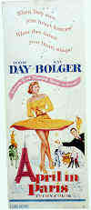 |
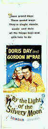 |
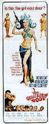 |
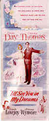 |
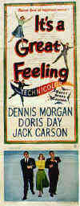 |
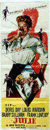 |
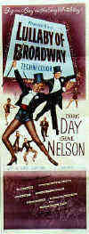 |
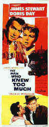 |
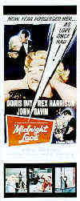 |
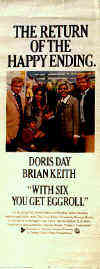 |
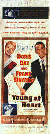 |
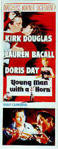 |


Click on a poster thumbnail image to see a larger view.

Selections from the Feature
Archive include articles on Akira Kurosawa, Blonde Bimbos, Frank Darabont, Steven Culp, John Herzfeld or Vietnam: The Hollywood Pariah, and many
more....
The Bitch Brigade

A line-up of lean-lipped actresses who marched through
Hollywood in a high heeled goose step armed with razor sharp dialogue.
Click on the image to read all about them.
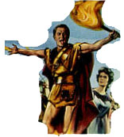
Spartacus (SE) /A, B+
This is one of the great epic films with an animally electric performance
from Kirk Douglas. Great special editon.

Click on the DVD MIA symbol for profiles of DVDs missing
in action.
Add films to the DVD MIA Master List by filling out a simple
form. Click Here


ISF Monitor
Calibrations in the Tristate New York area. Lots of hardware
info and frequent hardware peaks from video expert Kevin Miller. They may
be judgmental, but that's the point, isn't it. Lots of DVD reviews plus
news and more.
Excellent British based DVD review site that features Region 2 and
Region 1 releases. Check out their fine interviews as well.

"CinemaQuest has matched the correct TV color of gray in a light
fixture."__Joe Kane
Monitor bias lighting in a pre-packaged configuration. Take the strain off
your eyes.
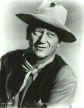

Manufacturer of computer-video interfaces, switchers, distribution
amplifiers, computer-video scan converters, and high resolution cable.
Found in many high end home theater systems.

BargainFlix doesn't sell movies! We just tell you where to get them
for the best price! DVD reviews, giveaways and more.
 Have you visited Home Theater Talk
lately? One of the friendliest places on the Net for Home Theater and DVD
discussion, you can get help for installation problems or simply share
your opinions with other Vidiots.
Have you visited Home Theater Talk
lately? One of the friendliest places on the Net for Home Theater and DVD
discussion, you can get help for installation problems or simply share
your opinions with other Vidiots.

A home theater site filled with a host of useful information, including
links to many other site.

Timely DVD reviews and an easy-to-use interface. Weekly
contests.
 Kinoeye Archive
Kinoeye Archive
This is a resource of all content-rich materials on the web
relating to Central and East European cinema. The ultimate aim of the
Kinoeye Archive is to provide a near-as-damn-it definitive index of
intelligent and thoughtful English-language analysis of Central and
Eastern European cinema on the web.
MRQE
Find reams of movie and DVD reviews at the Movie Review Query
Engine, a index of reviews appearing on the Internet.

Comprehensive DVD review database. Easy to use interface with
specific region searches.

Excellent resource for movie review links, with many early looks.